2025 National 5 Mathematics - Paper 2 marking instructions
Source: Scottish Qualifications Authority (SQA) / Qualifications Scotland. This is a StemInteract HTML companion, not an official HTML edition. Selectable text is supplied alongside original page images. Use the images or original PDF for equations, powers, fractions, vector notation, tables and diagrams; text extraction cannot fully preserve mathematical layout.
Jump to a question
PDF page 1
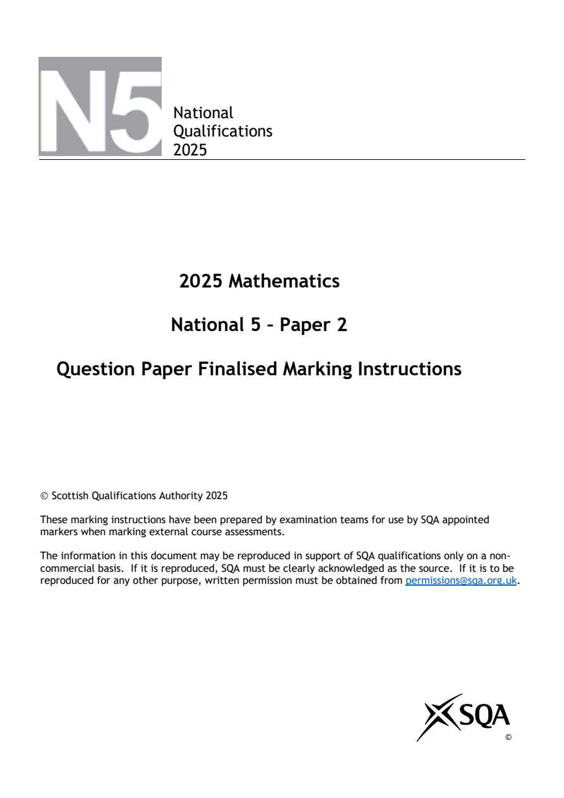
Selectable page text
National
Qualifications
2025
2025 Mathematics
National 5 – Paper 2
Question Paper Finalised Marking Instructions
© Scottish Qualifications Authority 2025
These marking instructions have been prepared by examination teams for use by SQA appointed
markers when marking external course assessments.
The information in this document may be reproduced in support of SQA qualifications only on a non-
commercial basis. If it is reproduced, SQA must be clearly acknowledged as the source. If it is to be
reproduced for any other purpose, written permission must be obtained from permissions@sqa.org.uk.
©PDF page 2
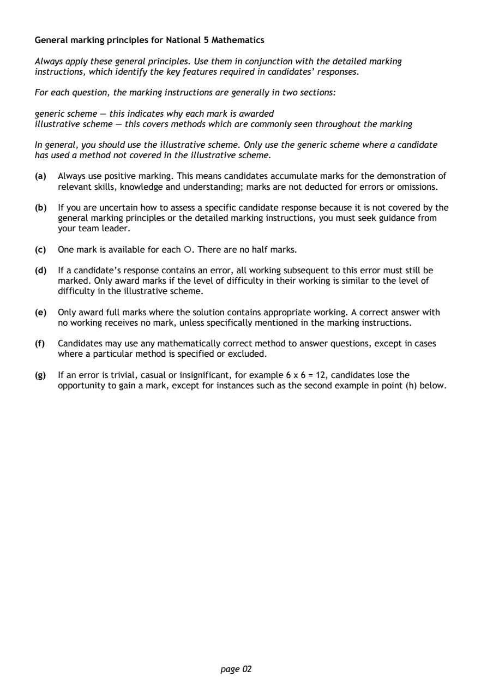
Selectable page text
General marking principles for National 5 Mathematics
Always apply these general principles. Use them in conjunction with the detailed marking
instructions, which identify the key features required in candidates’ responses.
For each question, the marking instructions are generally in two sections:
generic scheme — this indicates why each mark is awarded
illustrative scheme — this covers methods which are commonly seen throughout the marking
In general, you should use the illustrative scheme. Only use the generic scheme where a candidate
has used a method not covered in the illustrative scheme.
(a) Always use positive marking. This means candidates accumulate marks for the demonstration of
relevant skills, knowledge and understanding; marks are not deducted for errors or omissions.
(b) If you are uncertain how to assess a specific candidate response because it is not covered by the
general marking principles or the detailed marking instructions, you must seek guidance from
your team leader.
(c) One mark is available for each . There are no half marks.
(d) If a candidate’s response contains an error, all working subsequent to this error must still be
marked. Only award marks if the level of difficulty in their working is similar to the level of
difficulty in the illustrative scheme.
(e) Only award full marks where the solution contains appropriate working. A correct answer with
no working receives no mark, unless specifically mentioned in the marking instructions.
(f) Candidates may use any mathematically correct method to answer questions, except in cases
where a particular method is specified or excluded.
(g) If an error is trivial, casual or insignificant, for example 6 x 6 = 12, candidates lose the
opportunity to gain a mark, except for instances such as the second example in point (h) below.
page 02PDF page 3
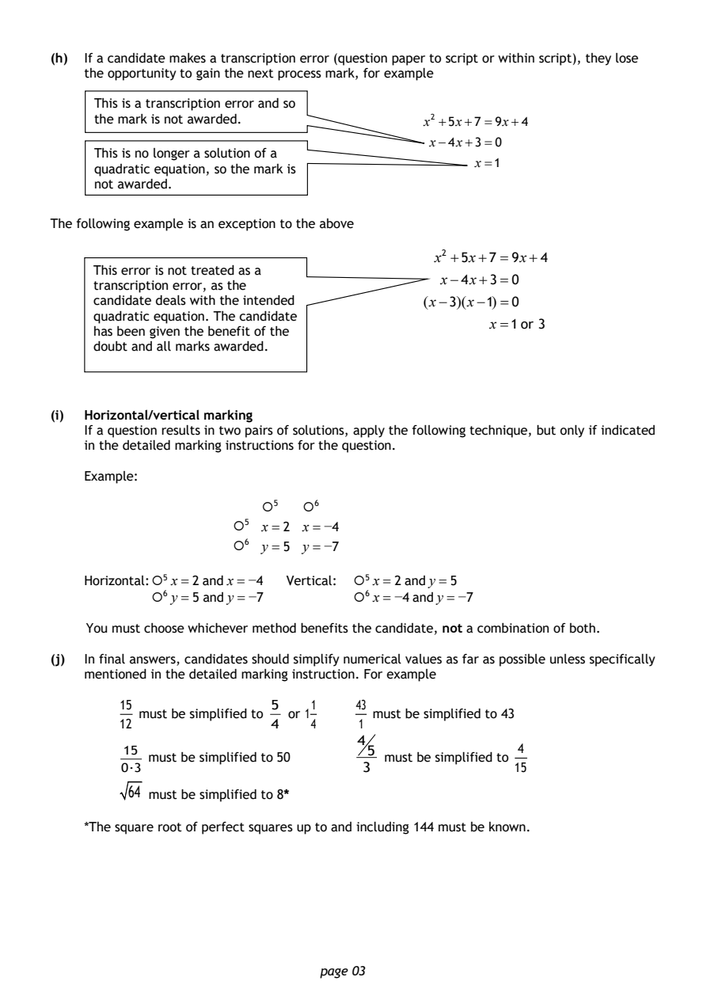
Selectable page text
(h) If a candidate makes a transcription error (question paper to script or within script), they lose
the opportunity to gain the next process mark, for example
This is a transcription error and so
the mark is not awarded. x² +5x+7=9x+4
x−4x+3=0
This is no longer a solution of a
x=1
quadratic equation, so the mark is
not awarded.
The following example is an exception to the above
x² +5x+7 =9x+4
This error is not treated as a
x−4x+3=0
transcript ion err or, as the
candidate deals with the intended (x−3)(x−1)=0
quadratic equation. The candidate
x =1 or 3
has been given the benefit of the
doubt and all marks awarded.
(i) Horizontal/vertical marking
If a question results in two pairs of solutions, apply the following technique, but only if indicated
in the detailed marking instructions for the question.
Example:
5 6
5 x = 2 x = −4
6 y = 5 y = −7
Horizontal: ⁵ x = 2 and x = −4 Vertical: 5 x = 2 and y = 5
6 y = 5 and y = −7 6 x = −4 and y = −7
You must choose whichever method benefits the candidate, not a combination of both.
(j) In final answers, candidates should simplify numerical values as far as possible unless specifically
mentioned in the detailed marking instruction. For example
15 5 1 43
must be simplified to or 1 must be simplified to 43
12 4 4 1
4
15 5 4
must be simplified to 50 must be simplified to
0·3 3 15
64
must be simplified to 8*
*The square root of perfect squares up to and including 144 must be known.
page 03PDF page 4
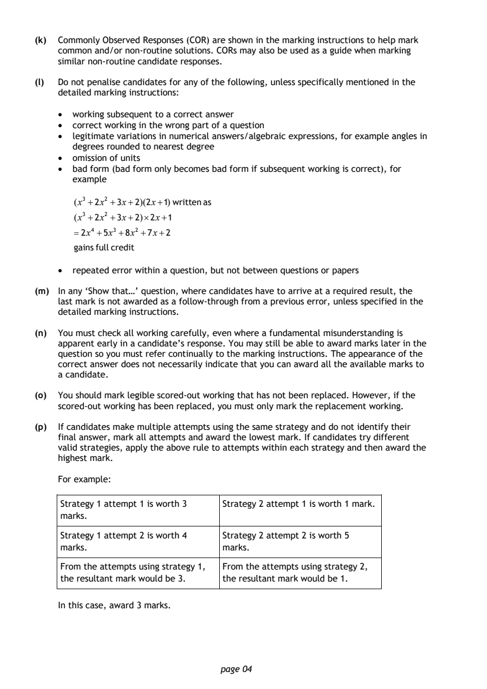
Selectable page text
(k) Commonly Observed Responses (COR) are shown in the marking instructions to help mark
common and/or non-routine solutions. CORs may also be used as a guide when marking
similar non-routine candidate responses.
(l) Do not penalise candidates for any of the following, unless specifically mentioned in the
detailed marking instructions:
• working subsequent to a correct answer
• correct working in the wrong part of a question
• legitimate variations in numerical answers/algebraic expressions, for example angles in
degrees rounded to nearest degree
• omission of units
• bad form (bad form only becomes bad form if subsequent working is correct), for
example
(x³ +2x² +3x+2)(2x+1) written as
(x³ +2x² +3x+2)×2x+1
=2x⁴ +5x³ +8x² +7x+2
gains full credit
• repeated error within a question, but not between questions or papers
(m) In any ‘Show that…’ question, where candidates have to arrive at a required result, the
last mark is not awarded as a follow-through from a previous error, unless specified in the
detailed marking instructions.
(n) You must check all working carefully, even where a fundamental misunderstanding is
apparent early in a candidate’s response. You may still be able to award marks later in the
question so you must refer continually to the marking instructions. The appearance of the
correct answer does not necessarily indicate that you can award all the available marks to
a candidate.
(o) You should mark legible scored-out working that has not been replaced. However, if the
scored-out working has been replaced, you must only mark the replacement working.
(p) If candidates make multiple attempts using the same strategy and do not identify their
final answer, mark all attempts and award the lowest mark. If candidates try different
valid strategies, apply the above rule to attempts within each strategy and then award the
highest mark.
For example:
Strategy 1 attempt 1 is worth 3 Strategy 2 attempt 1 is worth 1 mark.
marks.
Strategy 1 attempt 2 is worth 4 Strategy 2 attempt 2 is worth 5
marks. marks.
From the attempts using strategy 1, From the attempts using strategy 2,
the resultant mark would be 3. the resultant mark would be 1.
In this case, award 3 marks.
page 04PDF page 5
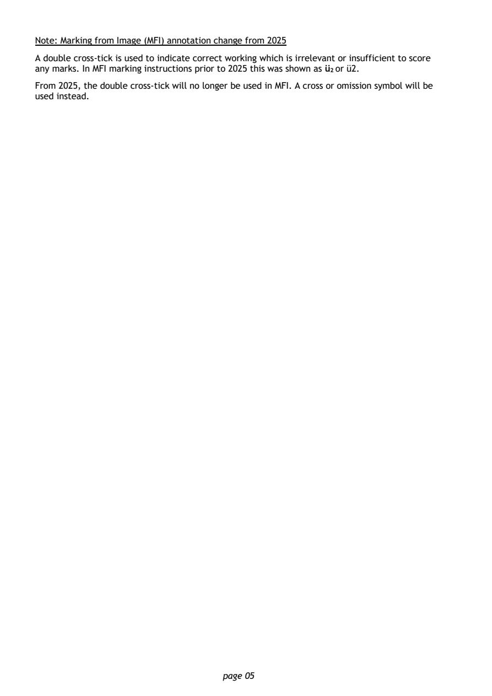
Selectable page text
Note: Marking from Image (MFI) annotation change from 2025
A double cross-tick is used to indicate correct working which is irrelevant or insufficient to score
any marks. In MFI marking instructions prior to 2025 this was shown as ü or ü2.
2
From 2025, the double cross-tick will no longer be used in MFI. A cross or omission symbol will be
used instead.
page 05PDF page 6
Paper 2, Question 1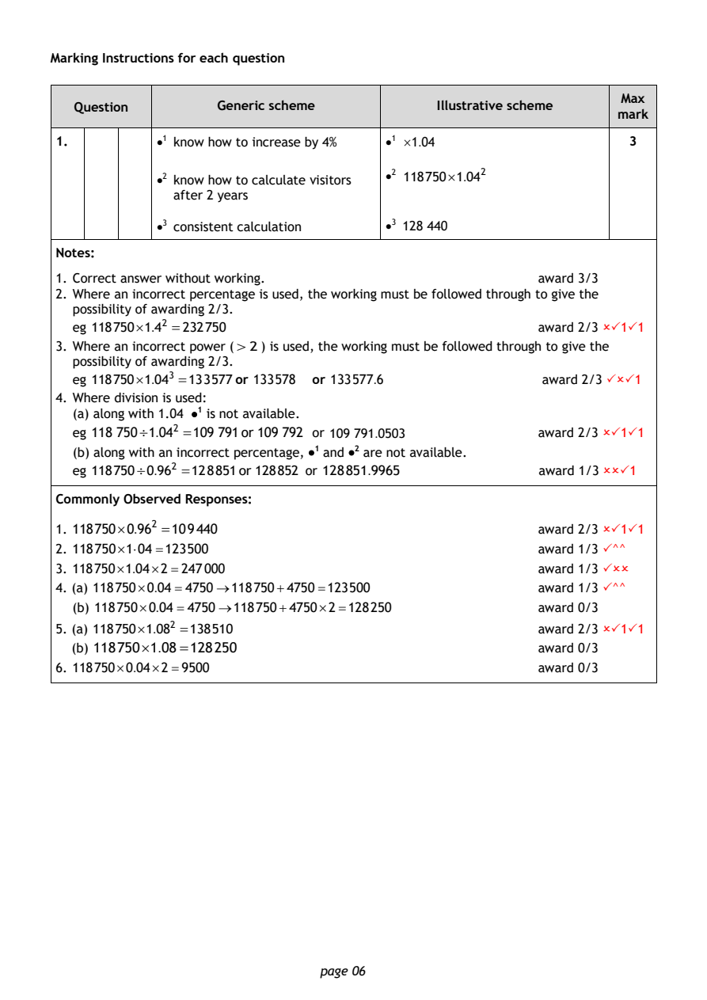
Selectable page text
Marking Instructions for each question
Max
Question Generic scheme Illustrative scheme
mark
1. •1 know how to increase by 4% •1 ×1.04 3
•2 know how to calculate visitors •2 118750×1.04²
after 2 years
•3 consistent calculation •3 128 440
Notes:
1. Correct answer without working. award 3/3
2. Where an incorrect percentage is used, the working must be followed through to give the
possibility of awarding 2/3.
eg 118750×1.4² =232750 award 2/3 11
3. Where an incorrect power (> 2) is used, the working must be followed through to give the
possibility of awarding 2/3.
eg 118750×1.04³ =133577or 133578 or 133577.6 award 2/3 1
4. Where division is used:
(a) along with 1.04 •¹ is not available.
eg 118 750÷1.04² =109 791or 109 792 or 109 791.0503 award 2/3 11
(b) along with an incorrect percentage, •¹ and •² are not available.
eg 118750÷0.96² =128851or 128852 or 128851.9965 award 1/3 1
Commonly Observed Responses:
1. 118750×0.96² =109440 award 2/3 11
2. 118750×1⋅04 =123500 award 1/3 ^^
3. 118750×1.04×2=247000 award 1/3
4. (a) 118750×0.04=4750→118750+4750=123500 award 1/3 ^^
(b) 118750×0.04 =4750→118750+4750×2=128250 award 0/3
5. (a) 118750×1.08² =138510 award 2/3 11
(b) 118750×1.08=128250 award 0/3
6. 118750×0.04×2=9500 award 0/3
page 06PDF page 7
Paper 2, Question 2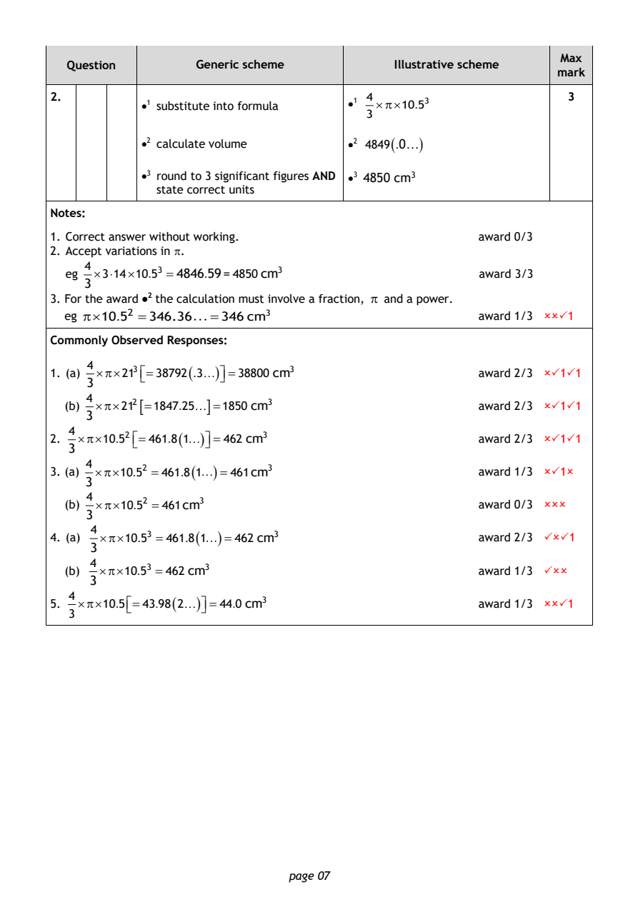
Selectable page text
Max
Question Generic scheme Illustrative scheme
mark
2. 4 3
•1 substitute into formula •1 ×π×10.5³
3
•2 calculate volume •2 4849(.0 )
•3 round to 3 significant figures AND •³ 4850 cm³
state correct units
Notes:
1. Correct answer without working. award 0/3
2. Accept variations in π.
4
eg ×3⋅14×10.5³ =4846.59=4850 cm³ award 3/3
3
3. For the award •² the calculation must involve a fraction, π and a power.
eg π×10.5² =346.36 =346 cm³ award 1/3 1
Commonly Observed Responses:
4
1. (a) ×π×21³=38792(.3 )=38800 cm³ award 2/3 11
3
4
(b) ×π×21² [=1847.25 ]=1850 cm³ award 2/3 11
3
4
2. ×π×10.5² =461.8(1 )=462cm³ award 2/3 11
3
4
3. (a) ×π×10.5² =461.8(1 )=461cm³ award 1/3 1
3
4
(b) ×π×10.5² =461cm³ award 0/3
3
4
4. (a) ×π×10.5³ =461.8(1 )=462cm³ award 2/3 1
3
4
(b) ×π×10.5³ =462cm³ award 1/3
3
4
5. ×π×10.5=43.98(2 )=44.0 cm³ award 1/3 1
3
page 07PDF page 8
Paper 2, Question 3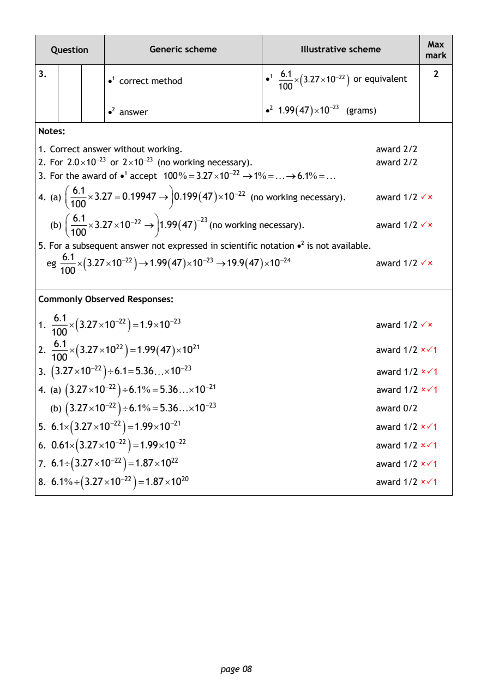
Selectable page text
Max
Question Generic scheme Illustrative scheme
mark
3. 6.1 2
•1 correct method •1 × ( 3.27×10⁻²² ) or equivalent
100
•2 answer •2 1.99(47)×10⁻²³ (grams)
Notes:
1. Correct answer without working. award 2/2
2. For 2.0×10⁻²³ or 2×10⁻²³ (no working necessary). award 2/2
3. For the award of •¹ accept 100%=3.27×10⁻²² →1%= →6.1%=
6.1
4. (a) ×3.27 =0.19947 → 0.199(47)×10⁻²² (no working necessary). award 1/2
100
6.1
(b) ×3.27×10⁻²² → 1.99(47)⁻²³(no working necessary). award 1/2
100
5. For a subsequent answer not expressed in scientific notation •² is not available.
6.1
eg × ( 3.27×10⁻²² ) →1.99(47)×10⁻²³ →19.9(47)×10⁻²⁴ award 1/2
100
Commonly Observed Responses:
6.1
( )
1. × 3.27×10⁻²² =1.9×10⁻²³ award 1/2
100
6.1
2. × ( 3.27×10²² ) =1.99(47)×10²¹ award 1/2 1
100
( )
3. 3.27×10⁻²² ÷6.1=5.36 ×10⁻²³ award 1/2 1
( )
4. (a) 3.27×10⁻²² ÷6.1%=5.36 ×10⁻²¹ award 1/2 1
( )
(b) 3.27×10⁻²² ÷6.1%=5.36 ×10⁻²³ award 0/2
( )
5. 6.1× 3.27×10⁻²² =1.99×10⁻²¹ award 1/2 1
( )
6. 0.61× 3.27×10⁻²² =1.99×10⁻²² award 1/2 1
( )
7. 6.1÷ 3.27×10⁻²² =1.87×10²² award 1/2 1
( )
8. 6.1%÷ 3.27×10⁻²² =1.87×10²⁰ award 1/2 1
page 08PDF page 9
Paper 2, Question 4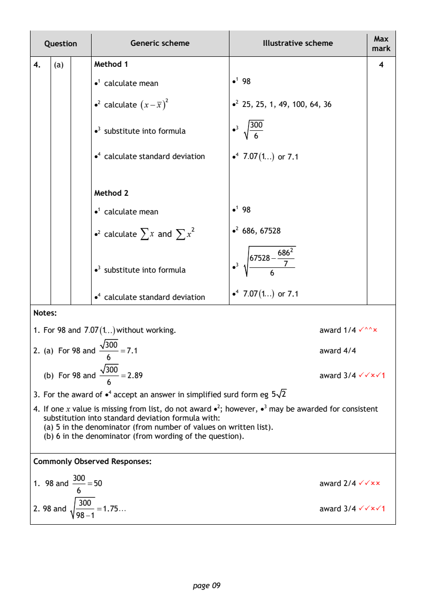
Selectable page text
Max
Question Generic scheme Illustrative scheme
mark
4. (a) Method 1 4
•1 calculate mean •1 98
•2 calculate (x−x)² •2 25, 25, 1, 49, 100, 64, 36
300
•3 substitute into formula •3
6
•4 calculate standard deviation •4 7.07(1 ) or 7.1
Method 2
•1 calculate mean •1 98
•2 calculate ∑x and ∑x² •2 686, 67528
686²
67528−
•3 substitute into formula
•3 7
6
•4 7.07(1 ) or 7.1
•4 calculate standard deviation
Notes:
1. For 98 and 7.07(1 )without working. award 1/4 ^^
300
2. (a) For 98 and =7.1 award 4/4
6
300
(b) For 98 and =2.89 award 3/4 1
6
3. For the award of •⁴ accept an answer in simplified surd form eg 5 2
4. If one x value is missing from list, do not award •²; however, •³ may be awarded for consistent
substitution into standard deviation formula with:
(a) 5 in the denominator (from number of values on written list).
(b) 6 in the denominator (from wording of the question).
Commonly Observed Responses:
300
1. 98 and =50 award 2/4
6
300
2. 98 and =1.75 award 3/4 1
98−1
page 09PDF page 10
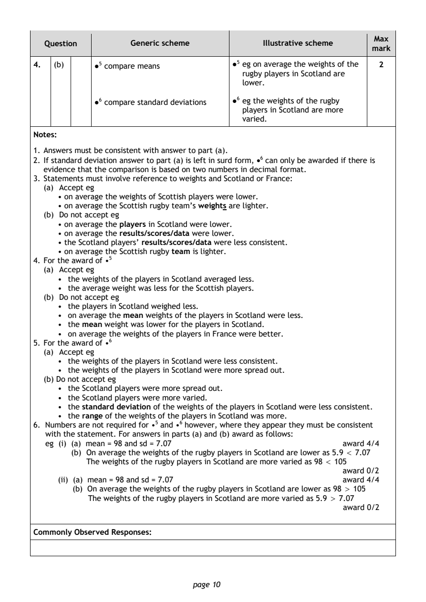
Selectable page text
Max
Question Generic scheme Illustrative scheme
mark
4. (b) ●5 compare means ●5 eg on average the weights of the 2
rugby players in Scotland are
lower.
●6 compare standard deviations ●6 eg the weights of the rugby
players in Scotland are more
varied.
Notes:
1. Answers must be consistent with answer to part (a).
2. If standard deviation answer to part (a) is left in surd form, •⁶ can only be awarded if there is
evidence that the comparison is based on two numbers in decimal format.
3. Statements must involve reference to weights and Scotland or France:
(a) Accept eg
• on average the weights of Scottish players were lower.
• on average the Scottish rugby team’s weights are lighter.
(b) Do not accept eg
• on average the players in Scotland were lower.
• on average the results/scores/data were lower.
• the Scotland players’ results/scores/data were less consistent.
• on average the Scottish rugby team is lighter.
4. For the award of •⁵
(a) Accept eg
• the weights of the players in Scotland averaged less.
• the average weight was less for the Scottish players.
(b) Do not accept eg
• the players in Scotland weighed less.
• on average the mean weights of the players in Scotland were less.
• the mean weight was lower for the players in Scotland.
• on average the weights of the players in France were better.
5. For the award of •⁶
(a) Accept eg
• the weights of the players in Scotland were less consistent.
• the weights of the players in Scotland were more spread out.
(b) Do not accept eg
• the Scotland players were more spread out.
• the Scotland players were more varied.
• the standard deviation of the weights of the players in Scotland were less consistent.
• the range of the weights of the players in Scotland was more.
6. Numbers are not required for •⁵ and •⁶ however, where they appear they must be consistent
with the statement. For answers in parts (a) and (b) award as follows:
eg (i) (a) mean = 98 and sd = 7.07 award 4/4
(b) On average the weights of the rugby players in Scotland are lower as 5.9 < 7.07
The weights of the rugby players in Scotland are more varied as 98 < 105
award 0/2
(ii) (a) mean = 98 and sd = 7.07 award 4/4
(b) On average the weights of the rugby players in Scotland are lower as 98 > 105
The weights of the rugby players in Scotland are more varied as 5.9 > 7.07
award 0/2
Commonly Observed Responses:
page 10PDF page 11
Paper 2, Question 5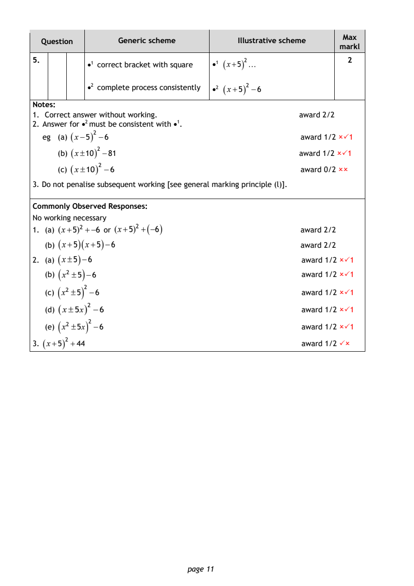
Selectable page text
Max
Question Generic scheme Illustrative scheme
markl
5. 2
•1 correct bracket with square •1 (x+5)²
•2 complete process consistently •2 (x+5)² −6
Notes:
1. Correct answer without working. award 2/2
2. Answer for •² must be consistent with •¹.
eg (a) (x−5)² −6 award 1/2 1
(b) (x±10)² −81 award 1/2 1
(c) (x±10)² −6 award 0/2
3. Do not penalise subsequent working [see general marking principle (l)].
Commonly Observed Responses:
No working necessary
1. (a) (x+5)² +−6 or (x+5)² +(−6) award 2/2
(b)
(x+5)(x+5)−6
award 2/2
2. (a)
(x±5)−6
award 1/2 1
( )
(b) x² ±5 −6 award 1/2 1
( )
(c) x² ±5 ² −6 award 1/2 1
(d) (x±5x)² −6 award 1/2 1
( )
(e) x² ±5x ² −6 award 1/2 1
3. (x+5)² +44 award 1/2
page 11PDF page 12
Paper 2, Question 6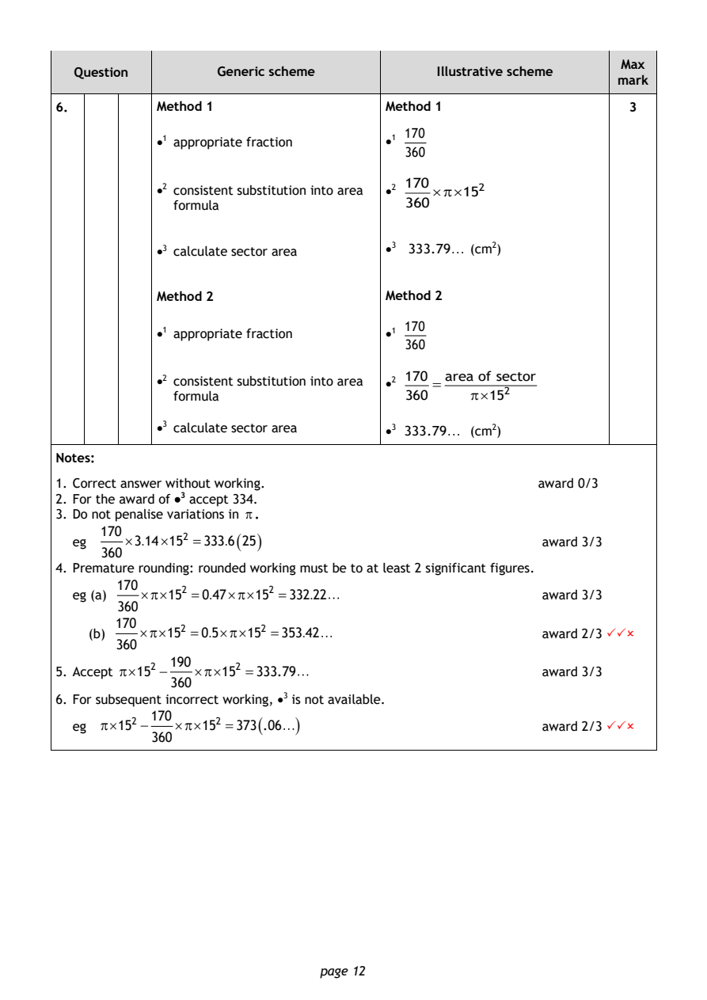
Selectable page text
Max
Question Generic scheme Illustrative scheme
mark
6. Method 1 Method 1 3
170
•1 appropriate fraction •1
360
170
•2 consistent substitution into area •2 ×π×15²
formula 360
•3 calculate sector area •3 333.79 (cm²)
Method 2 Method 2
170
•1 appropriate fraction •1
360
170 area of sector
•2 consistent substitution into area •2 =
formula 360 π×15²
•3 calculate sector area •3 333.79 (cm²)
Notes:
1. Correct answer without working. award 0/3
2. For the award of •³ accept 334.
3. Do not penalise variations in π.
170
eg ×3.14×15² =333.6(25) award 3/3
360
4. Premature rounding: rounded working must be to at least 2 significant figures.
170
eg (a) ×π×15² =0.47×π×15² =332.22 award 3/3
360
170
(b) ×π×15² =0.5×π×15² =353.42 award 2/3
360
190
5. Accept π×15² − ×π×15² =333.79 award 3/3
360
6. For subsequent incorrect working, •³ is not available.
170
eg π×15² − ×π×15² =373(.06 ) award 2/3
360
page 12PDF page 13
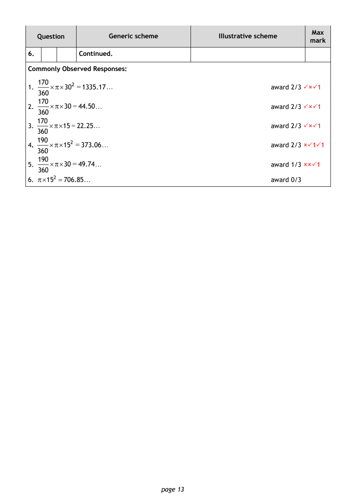
Selectable page text
Max
Question Generic scheme Illustrative scheme
mark
6. Continued.
Commonly Observed Responses:
170
1. ×π×30² =1335.17 award 2/3 1
360
170
2. ×π×30=44.50 award 2/3 1
360
170
3. ×π×15=22.25 award 2/3 1
360
190
4. ×π×15² =373.06 award 2/3 11
360
190
5. ×π×30=49.74 award 1/3 1
360
6. π×15² =706.85 award 0/3
page 13PDF page 14
Paper 2, Question 7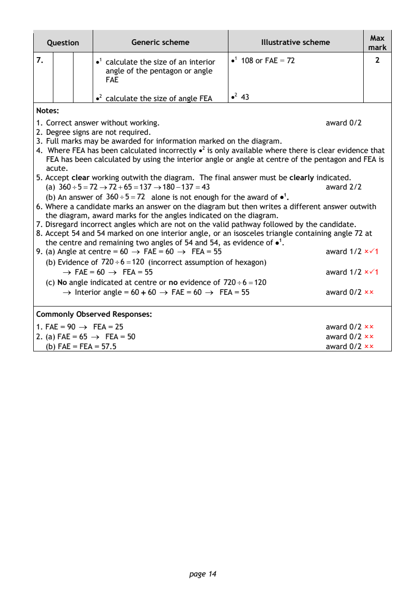
Selectable page text
Max
Question Generic scheme Illustrative scheme
mark
7. •1 calculate the size of an interior •1 108 or FAE = 72 2
angle of the pentagon or angle
FAE
•2 calculate the size of angle FEA •2 43
Notes:
1. Correct answer without working. award 0/2
2. Degree signs are not required.
3. Full marks may be awarded for information marked on the diagram.
4. Where FEA has been calculated incorrectly •² is only available where there is clear evidence that
FEA has been calculated by using the interior angle or angle at centre of the pentagon and FEA is
acute.
5. Accept clear working outwith the diagram. The final answer must be clearly indicated.
(a) 360÷5=72→72+65=137→180−137 =43 award 2/2
(b) An answer of 360÷5=72 alone is not enough for the award of •¹.
6. Where a candidate marks an answer on the diagram but then writes a different answer outwith
the diagram, award marks for the angles indicated on the diagram.
7. Disregard incorrect angles which are not on the valid pathway followed by the candidate.
8. Accept 54 and 54 marked on one interior angle, or an isosceles triangle containing angle 72 at
the centre and remaining two angles of 54 and 54, as evidence of •¹.
9. (a) Angle at centre = 60 → FAE = 60 → FEA = 55 award 1/2 1
(b) Evidence of 720÷6=120 (incorrect assumption of hexagon)
→ FAE = 60 → FEA = 55 award 1/2 1
(c) No angle indicated at centre or no evidence of 720÷6=120
→ Interior angle = 60 + 60 → FAE = 60 → FEA = 55 award 0/2
Commonly Observed Responses:
1. FAE = 90 → FEA = 25 award 0/2
2. (a) FAE = 65 → FEA = 50 award 0/2
(b) FAE = FEA = 57.5 award 0/2
page 14PDF page 15
Paper 2, Question 8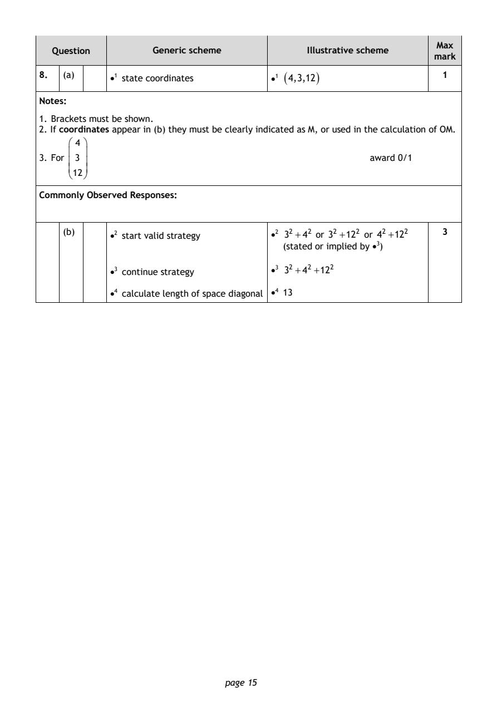
Selectable page text
Max
Question Generic scheme Illustrative scheme
mark
8. (a) •1 state coordinates •1 (4,3,12) 1
Notes:
1. Brackets must be shown.
2. If coordinates appear in (b) they must be clearly indicated as M, or used in the calculation of OM.
4
3. For 3 award 0/1
12
Commonly Observed Responses:
(b) •2 start valid strategy •2 3² +4² or 3² +12² or 4²+12² 3
(stated or implied by •³)
•3 continue strategy •3 3² +4² +12²
•4 calculate length of space diagonal •⁴ 13
page 15PDF page 16
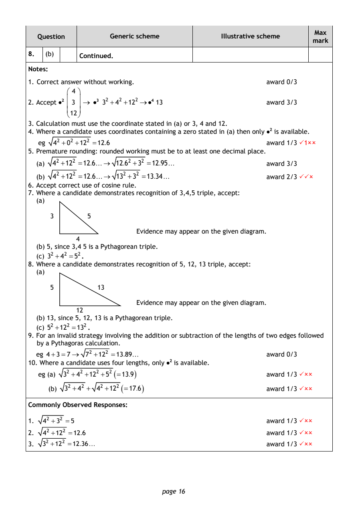
Selectable page text
Max
Question Generic scheme Illustrative scheme
mark
8. (b) Continued.
Notes:
1. Correct answer without working. award 0/3
4
2. Accept •² 3 → •3 3² +4² +12² →•4 13 award 3/3
12
3. Calculation must use the coordinate stated in (a) or 3, 4 and 12.
4. Where a candidate uses coordinates containing a zero stated in (a) then only •² is available.
eg 4² +0² +12² =12.6 award 1/3 1
5. Premature rounding: rounded working must be to at least one decimal place.
(a) 4² +12² =12.6 → 12.6² +3² =12.95 award 3/3
(b) 4² +12² =12.6 → 13² +3² =13.34 award 2/3
6. Accept correct use of cosine rule.
7. Where a candidate demonstrates recognition of 3,4,5 triple, accept:
(a)
3 5
Evidence may appear on the given diagram.
4
(b) 5, since 3,4 5 is a Pythagorean triple.
(c) 3² +4² =5².
8. Where a candidate demonstrates recognition of 5, 12, 13 triple, accept:
(a)
5 13
Evidence may appear on the given diagram.
12
(b) 13, since 5, 12, 13 is a Pythagorean triple.
(c) 5² +12² =13².
9. For an invalid strategy involving the addition or subtraction of the lengths of two edges followed
by a Pythagoras calculation.
eg 4+3=7→ 7² +12² =13.89 award 0/3
10. Where a candidate uses four lengths, only •² is available.
eg (a) 3² +4² +12² +5² (=13.9) award 1/3
(b) 3² +4² + 4² +12² (=17.6) award 1/3
Commonly Observed Responses:
1. 4² +3² =5 award 1/3
2. 4² +12² =12.6 award 1/3
3. 3² +12² =12.36 award 1/3
page 16PDF page 17
Paper 2, Question 9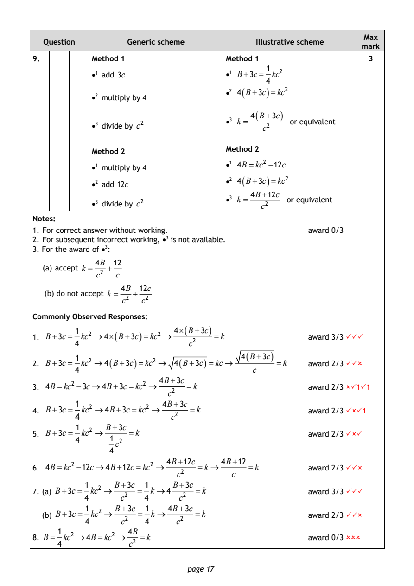
Selectable page text
Max
Question Generic scheme Illustrative scheme
mark
9. Method 1 Method 1 3
1
•1 add 3c •1 B+3c= kc²
4
•2 4(B+3c)=kc²
•2 multiply by 4
4(B+3c)
•3 k = or equivalent
•3 divide by c² c²
Method 2
Method 2
•1 4B=kc² −12c
•1 multiply by 4
•2 add 12c
•2 4(B+3c)=kc²
4B+12c
•3 k = or equivalent
•3 divide by c² c²
Notes:
1. For correct answer without working. award 0/3
2. For subsequent incorrect working, •³ is not available.
3. For the award of •³:
4B 12
(a) accept k = +
c² c
4B 12c
(b) do not accept k = +
c² c²
Commonly Observed Responses:
1
4×(B+3c)
1. B+3c= kc² →4×(B+3c)=kc² → =k award 3/3
4 c²
1
4(B+3c)
2. B+3c= kc² →4(B+3c)=kc² → 4(B+3c) =kc→ =k award 2/3
4 c
4B+3c
3. 4B=kc² −3c→4B+3c=kc² → =k award 2/3 11
c²
1 4B+3c
4. B+3c= kc² →4B+3c=kc² → =k award 2/3 1
4 c²
1 B+3c
5. B+3c= kc² → =k award 2/3
4 1
c²
4
4B+12c 4B+12
6. 4B=kc² −12c→4B+12c=kc² → =k → =k award 2/3
c² c
1 B+3c 1 B+3c
7. (a) B+3c= kc² → = k →4 =k award 3/3
4 c² 4 c²
1 B+3c 1 4B+3c
(b) B+3c= kc² → = k → =k award 2/3
4 c² 4 c²
1 4B
8. B= kc² →4B=kc² → =k award 0/3
4 c²
page 17PDF page 18
Paper 2, Question 10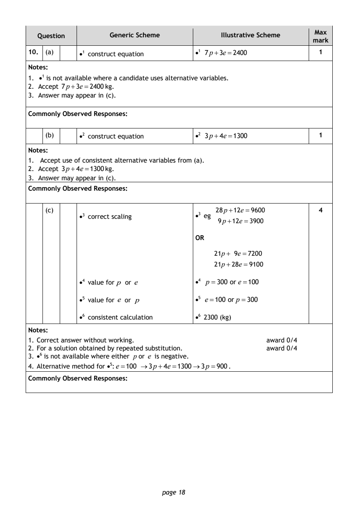
Selectable page text
Max
Question Generic Scheme Illustrative Scheme
mark
10. (a) •1 construct equation •1 7p+3e=2400 1
Notes:
1. •¹ is not available where a candidate uses alternative variables.
2. Accept 7p+3e=2400kg.
3. Answer may appear in (c).
Commonly Observed Responses:
(b) •2 construct equation •2 3p+4e=1300 1
Notes:
1. Accept use of consistent alternative variables from (a).
2. Accept 3p+4e=1300kg.
3. Answer may appear in (c).
Commonly Observed Responses:
(c) 28p+12e=9600 4
•3 correct scaling •3 eg
9p+12e=3900
OR
21p+ 9e=7200
21p+28e=9100
•4 value for p or e •4 p=300 or e=100
•5 value for e or p •5 e=100 or p=300
•6 consistent calculation •6 2300 (kg)
Notes:
1. Correct answer without working. award 0/4
2. For a solution obtained by repeated substitution. award 0/4
3. •⁶ is not available where either por e is negative.
4. Alternative method for •⁵: e=100 →3p+4e=1300→3p=900.
Commonly Observed Responses:
page 18PDF page 19
Paper 2, Question 11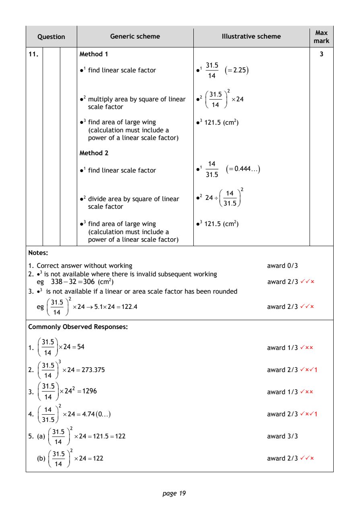
Selectable page text
Max
Question Generic scheme Illustrative scheme
mark
11. Method 1 3
31.5
●1 find linear scale factor ●1 (=2.25)
14
31.5 ²
●2 multiply area by square of linear ●2 ×24
scale factor 14
●3 find area of large wing ●3 121.5 (cm²)
(calculation must include a
power of a linear scale factor)
Method 2
14
●1 find linear scale factor ●1 (=0.444 )
31.5
14 ²
●2 divide area by square of linear ●2 24÷
31.5
scale factor
●3 find area of large wing ●3 121.5 (cm²)
(calculation must include a
power of a linear scale factor)
Notes:
1. Correct answer without working award 0/3
2. •³ is not available where there is invalid subsequent working
eg 338−32=306 (cm²) award 2/3
3. •³ is not available if a linear or area scale factor has been rounded
31.5 ²
eg ×24→5.1×24 =122.4 award 2/3
14
Commonly Observed Responses:
31.5
1. ×24 =54 award 1/3
14
31.5³
2. ×24 =273.375 award 2/3 1
14
31.5
3. ×24² =1296 award 1/3
14
14 ²
4. ×24 =4.74(0 ) award 2/3 1
31.5
31.5 ²
5. (a) ×24 =121.5=122 award 3/3
14
31.5 ²
(b) ×24 =122 award 2/3
14
page 19PDF page 20
Paper 2, Question 12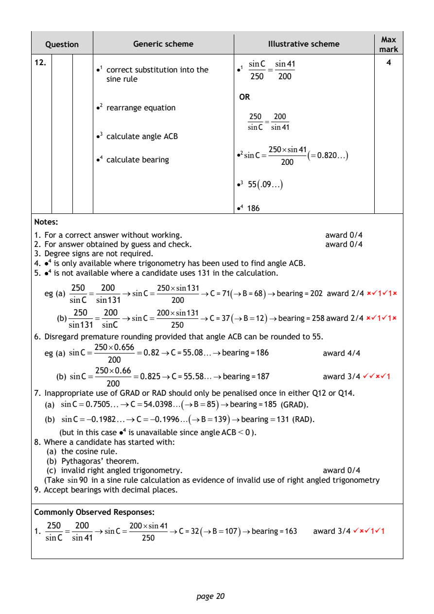
Selectable page text
Max
Question Generic scheme Illustrative scheme
mark
12. sinC sin41 4
•1 correct substitution into the •1 =
250 200
sine rule
OR
•2 rearrange equation
250 200
=
sinC sin41
•3 calculate angle ACB
250×sin41
•2sinC= (=0.820 )
•4 calculate bearing
200
•3 55(.09 )
•4 186
Notes:
1. For a correct answer without working. award 0/4
2. For answer obtained by guess and check. award 0/4
3. Degree signs are not required.
4. •⁴ is only available where trigonometry has been used to find angle ACB.
5. •⁴ is not available where a candidate uses 131 in the calculation.
250 200 250×sin131
eg (a) = →sinC= →C=71(→B=68)→bearing=202 award 2/4 ✓1✓1
sinC sin131 200
250 200 200×sin131
(b) = →sinC= →C=37(→B=12)→bearing=258award 2/4 ✓1✓1
sin131 sinC 250
6. Disregard premature rounding provided that angle ACB can be rounded to 55.
250×0.656
eg (a) sinC= =0.82→C=55.08 →bearing=186 award 4/4
200
250×0.66
(b) sinC= =0.825→C=55.58 →bearing=187 award 3/4 ✓✓✓1
200
7. Inappropriate use of GRAD or RAD should only be penalised once in either Q12 or Q14.
(a) sinC=0.7505 →C=54.0398 (→B=85)→bearing=185 (GRAD).
(b) sinC=−0.1982 →C=−0.1996 (→B=139)→bearing=131 (RAD).
(but in this case •⁴ is unavailable since angleACB<0).
8. Where a candidate has started with:
(a) the cosine rule.
(b) Pythagoras’ theorem.
(c) invalid right angled trigonometry. award 0/4
(Take sin90 in a sine rule calculation as evidence of invalid use of right angled trigonometry
9. Accept bearings with decimal places.
Commonly Observed Responses:
250 200 200×sin41
1. = →sinC= →C=32(→B=107)→bearing=163 award 3/4 ✓✓1✓1
sinC sin41 250
page 20PDF page 21
Paper 2, Question 13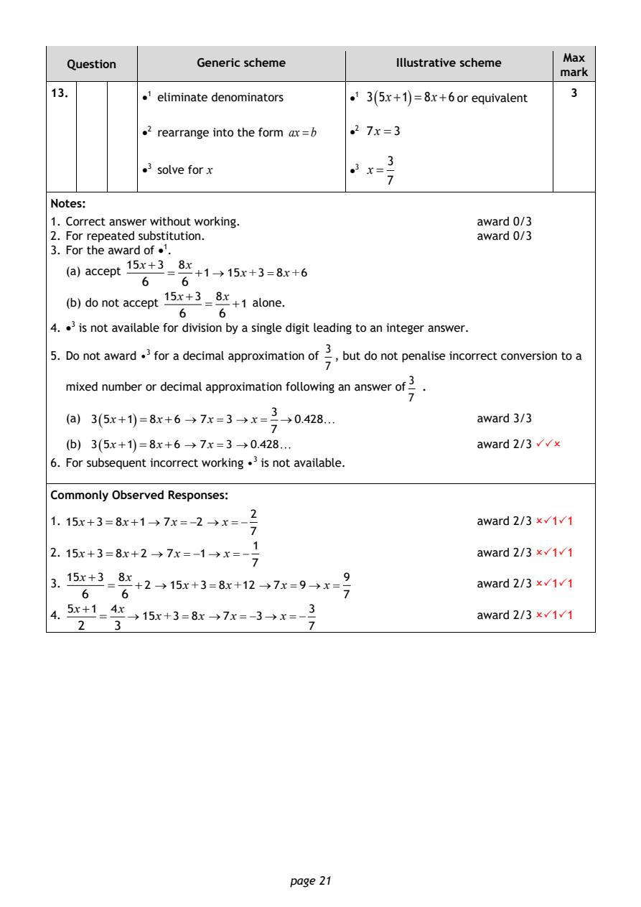
Selectable page text
Max
Question Generic scheme Illustrative scheme
mark
13. •1 eliminate denominators •1 3(5x+1)=8x+6or equivalent 3
•2 rearrange into the form ax=b •2 7x =3
3
•3 solve for x •3 x=
7
Notes:
1. Correct answer without working. award 0/3
2. For repeated substitution. award 0/3
3. For the award of •¹.
15x+3 8x
(a) accept = +1→15x+3=8x+6
6 6
15x+3 8x
(b) do not accept = +1 alone.
6 6
4. •³ is not available for division by a single digit leading to an integer answer.
3
5. Do not award •³ for a decimal approximation of , but do not penalise incorrect conversion to a
7
3
mixed number or decimal approximation following an answer of .
7
3
(a) 3(5x+1)=8x+6 → 7x=3 →x= →0.428 award 3/3
7
(b) 3(5x+1)=8x+6 → 7x=3 →0.428 award 2/3
6. For subsequent incorrect working •³ is not available.
Commonly Observed Responses:
2
1. 15x+3=8x+1→ 7x=−2 →x=− award 2/3 11
7
1
2. 15x+3=8x+2 → 7x=−1→ x=− award 2/3 11
7
15x+3 8x 9
3. = +2 →15x+3=8x+12 →7x=9→x= award 2/3 11
6 6 7
5x+1 4x 3
4. = →15x+3=8x →7x=−3→ x=− award 2/3 11
2 3 7
page 21PDF page 22
Paper 2, Question 14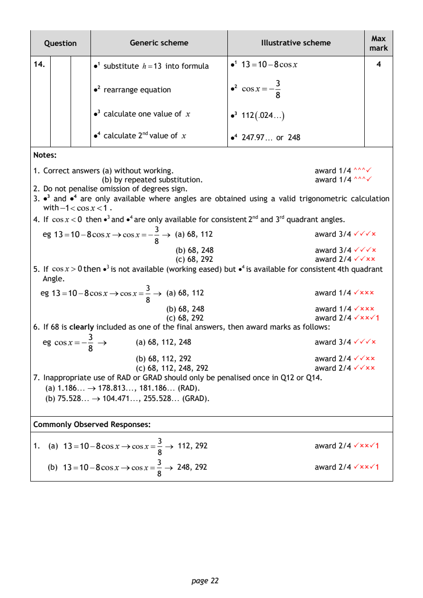
Selectable page text
Max
Question Generic scheme Illustrative scheme
mark
14. •1 substitute h=13 into formula •1 13=10−8cosx 4
3
•2 rearrange equation •2 cosx=−
8
•3 calculate one value of x •3 112(.024 )
•4 calculate 2ⁿ^{d} value of x •4 247.97 or 248
Notes:
1. Correct answers (a) without working. award 1/4 ^^^
(b) by repeated substitution. award 1/4 ^^^
2. Do not penalise omission of degrees sign.
3. •³ and •⁴ are only available where angles are obtained using a valid trigonometric calculation
with−1<cosx<1.
4. If cosx<0 then •³ and •⁴ are only available for consistent 2ⁿ^{d} and 3^{r}^{d} quadrant angles.
3
eg 13=10−8cosx→cosx=− → (a) 68, 112 award 3/4
8
(b) 68, 248 award 3/4
(c) 68, 292 award 2/4
5. If cosx>0then •³ is not available (working eased) but •⁴ is available for consistent 4th quadrant
Angle.
3
eg 13=10−8cosx→cosx= → (a) 68, 112 award 1/4
8
(b) 68, 248 award 1/4
(c) 68, 292 award 2/4 1
6. If 68 is clearly included as one of the final answers, then award marks as follows:
3
eg cosx=− → (a) 68, 112, 248 award 3/4
8
(b) 68, 112, 292 award 2/4
(c) 68, 112, 248, 292 award 2/4
7. Inappropriate use of RAD or GRAD should only be penalised once in Q12 or Q14.
(a) 1.186… → 178.813…, 181.186… (RAD).
(b) 75.528… → 104.471…, 255.528… (GRAD).
Commonly Observed Responses:
3
1. (a) 13=10−8cosx→cosx= → 112, 292 award 2/4 1
8
3
(b) 13=10−8cosx→cosx= → 248, 292 award 2/4 1
8
page 22PDF page 23
Paper 2, Question 15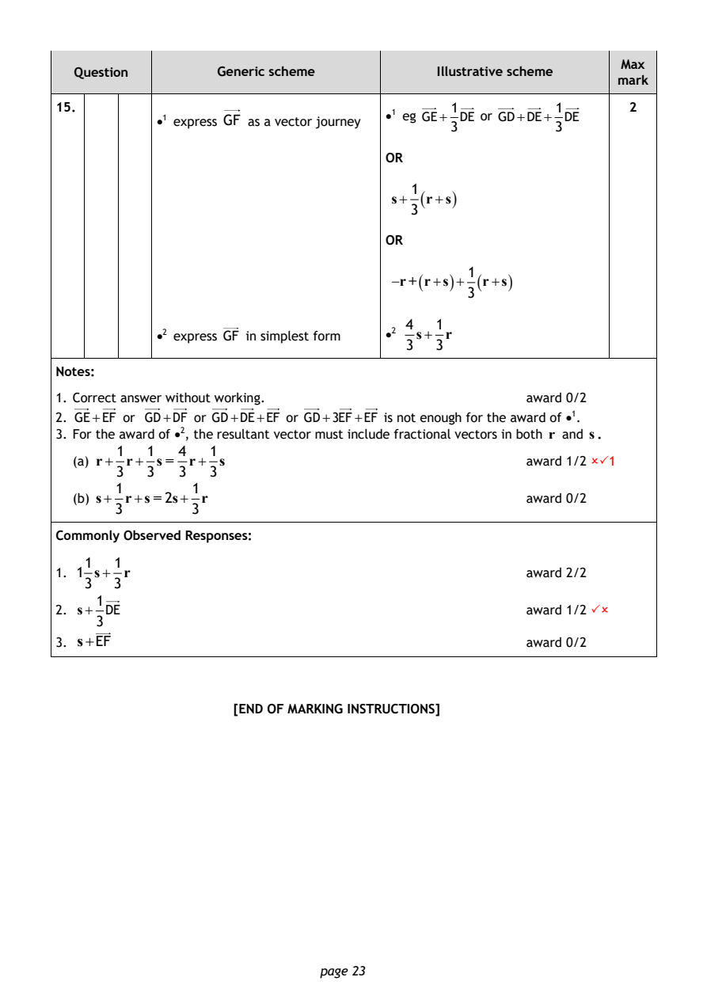
Selectable page text
Max
Question Generic scheme Illustrative scheme
mark
15. 1 1 2
•1 express GF as a vector journey •1 eg GE+ DE or GD+DE+ DE
3 3
OR
1
s+ (r+s)
3
OR
1
−r+(r+s)+ (r+s)
3
4 1
•2 express GF in simplest form •2 s+ r
3 3
Notes:
1. Correct answer without working. award 0/2
2. GE+EF or GD+DF or GD+DE+EF or GD+3EF+EF is not enough for the award of •¹.
3. For the award of •², the resultant vector must include fractional vectors in both r and s.
1 1 4 1
(a) r+ r+ s= r+ s award 1/2 1
3 3 3 3
1 1
(b) s+ r+s=2s+ r award 0/2
3 3
Commonly Observed Responses:
1 1
1. 1 s+ r award 2/2
3 3
1
2. s+ DE award 1/2
3
3. s+EF award 0/2
[END OF MARKING INSTRUCTIONS]
page 23